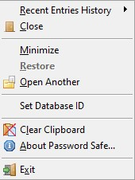
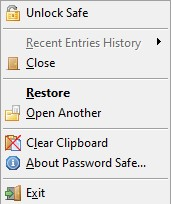

| Unlocked Database | Locked Database | |
|  |  |
The System Tray context menu gives access to recently used entries (if the database is unlocked) and to unlock the database if locked. It can also minimize the main PasswordSafe window and restore it if already minimized but not locked.
If you regularly have a number of databases open, after opening a database, you may set a unique temporary index (a number between 1 and 99) that will be superimposed on top of the System Tray icon. Setting an index of zero will remove this image. An index is reserved once assigned to an open database but will be free to be used again either when a new index is assigned or the database closed. In addition, the System Tray tooltip has been enhanced to show this index and make the text multiline to display the database name.
Notes: